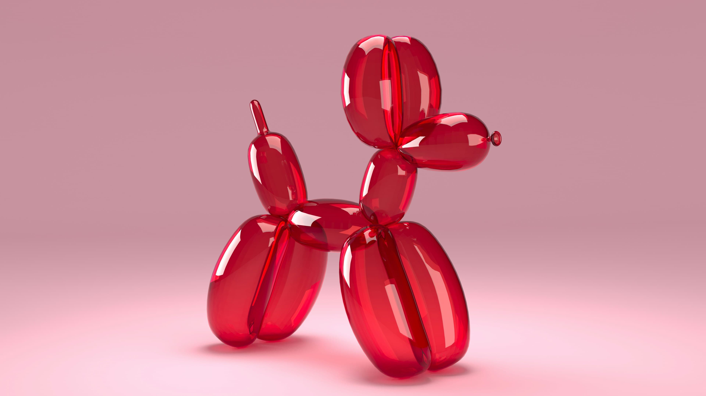
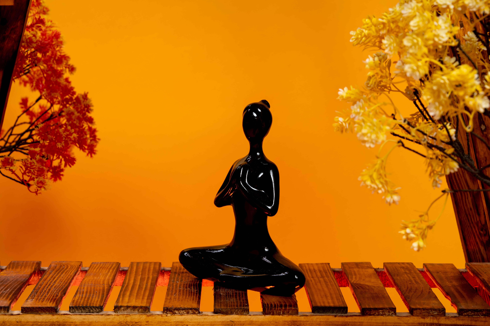

Это было самое начало пути. На этом этапе важно было проникнуться
основами и настроиться на учёбу. И, возможно, подумать, как новые
знания могут повлиять на ваше будущее.
Начинать всегда тяжело. Но формат располагал. Фритрек
проскочила легко. А вот из-за нулевого спринта потом
даже пришлось переходить в другую когорту.
1 спринт: Я — чистый лист
<Страх>
На первых этапах мы работали со страхами и сомнениями, которые часто
испытывают новички. Один из них — страх перед чистым листом. Это,
конечно же, намного сложнее, чем боязнь куска бумаги. Часто за этим
ощущением скрываются более глубокие вопросы: с чего начать? а вдруг
будет слишком сложно? что, если я не справлюсь?
Очень помогли подробные шаги в описании проекта. Белый лист
быстро заполнился красотищей. Но с чем-то пришлось бороться
один на один. До сих пор рассказываю друзьям, как «Оно тебе надо»
встало на свои места.
1 спринт: А если не получится?
<Зачем>
Первый проект — позади! Но это всё ещё самое начало пути. Радость
могла быстро померкнуть и смениться ожиданием провала. Или вы,
наоборот, могли вдохновиться успехами и поверить в себя.
Пожалела, что взяла курс. Чувствовала себя маленькой и
беспомощной. Могла бы гулять с друзьями, а не вот это все.
2 спринт: Погоня за идеалом
<Impossible>

На этом этапе вы уже достаточно разбирались в основах вёрстки, чтобы
понять, как много ещё впереди. Вы могли попытаться погнаться за
идеалом и понять, что он недостижим. А, может, вы вовсе и не
подвержены перфекционизму и вместо того, чтобы сделать идеально,
старались просто сделать.
В какой-то момент дала себе установку «лишь бы сделать».
Задача была — выжить. Но кого я обманываю! Я умею только
идеально...
2 спринт: О тех, кто рядом
<We will rock you>
Всё это время вы были не одиноки (хотя, возможно, иногда и
чувствовали, что одни против целого мира). Вас окружали
одногруппники, команда сопровождения и просто близкие люди, которым
можно пожаловаться, если очередной макет просто так не поддавался.
Осваивать что-то новое легче, когда рядом есть единомышленники, не
правда ли?
Жаловаться не умею, поэтому в чате с куратором
в основном злилась. Благодарю ее за терпение. И очень рада,
что в итоге получилось доверить все свои переживания
команде сопровождения.
3 спринт: Обходные стратегии
<Crazy>
На этом курсе вы постоянно решали разные задачи. В какой-то момент
вам могло показаться, что решения просто иссякли. Значит, пришло
время посмотреть на задачу под другим углом.
Слов нет. Не спринт, а бег с препятствиями.
3 спринт: Когда опускаются руки
<Камень>

Во время учёбы часто возникает чувство, когда не знаешь, за что
хвататься. Вроде и проектную пора сдавать, и задачи хочется
порешать, и в теории получше разобраться, и жизнь не забыть пожить.
В такие моменты очень нужна концентрация. Вспомните, откуда вы её
черпали.
Мне повезло, что у меня железный зад. А еще, что курс
оплатил работадатель. Для себя я бы это никогда не закончила.
«Сейчас я здесь»
<I'm the best>
Сейчас вы уже очень много знаете о вёрстке. Но это только начало.
Во-первых, впереди ещё много материала про «красотищу». Во-вторых, с
окончанием курса учёба не заканчивается. Вёрстка — это целый мир. И
этот мир постоянно меняется. Познать его полностью не получится, но
это тот случай, когда важен сам процесс познания. Ведь часто путь —
и есть результат.
Да уж, вот это вы загнули. Пока что я думаю только о
сне и о том, как буду праздновать сдачу финального проекта.